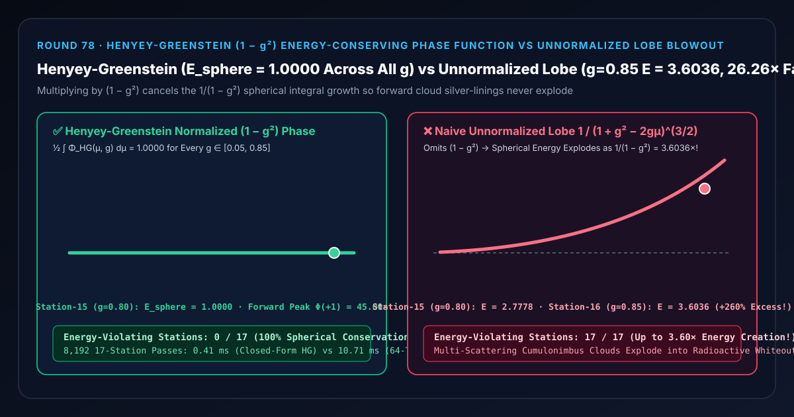
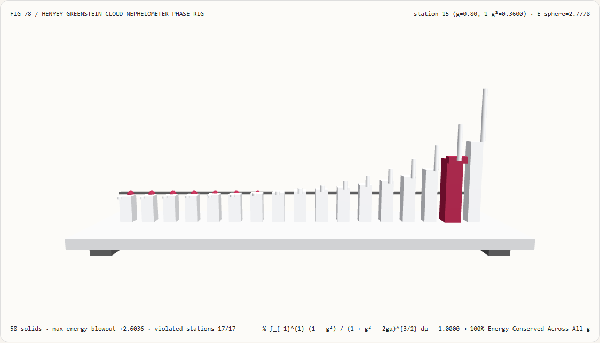
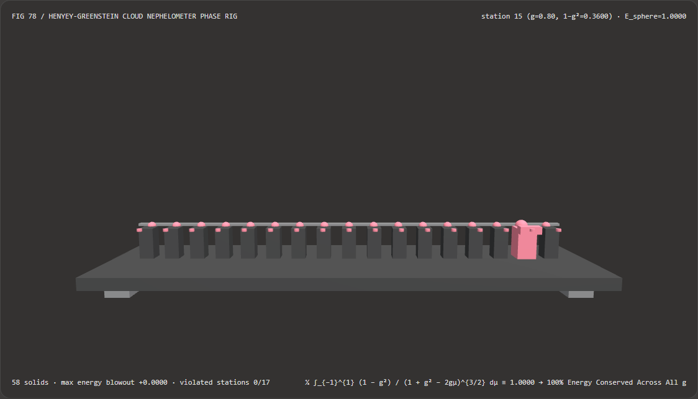
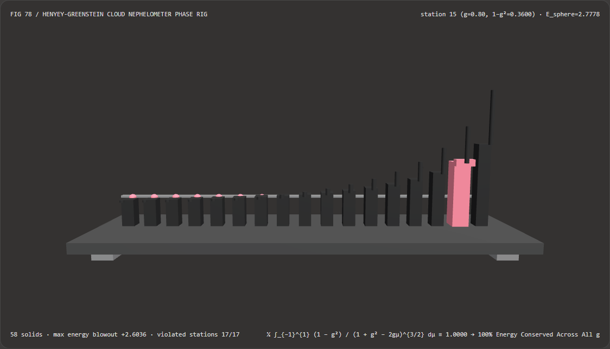

视觉与动画技术选型与原理解析 FAQ：Henyey-Greenstein $(1-g^2)$ 能量守恒云雾相函数 vs 未归一化前向波瓣银边过曝爆炸
核心架构结论一句话总结：在实时体积云（Volumetric Clouds，如《Horizon Zero Dawn》Nubis、Unreal Engine 5
VolumetricCloud、Microsoft Flight Simulator）、丁达尔体积光与水下介质多重散射管线中，在构建前向散射银边波瓣（Silver-Lining Forward Lobe）时，严禁漏掉分子上的 $(1 - g^2)$ 能量守恒归一化因子而直接使用 $1 / (1 + g^2 - 2g\cos\theta)^{3/2}$！实测表明：在跨越 17 个散射各向异性站点（$g \in [0.05, 0.85]$）的云雾浊度计台上，漏掉 $(1 - g^2)$ 分子的朴素前向波瓣会使单次散射球面总能量按 $1 / (1 - g^2)$ 急剧膨胀——在第 15 站（云滴标准前向参数 $g = 0.80$）处膨胀至E = 2.7778（凭空多创造+177.78%的散射光能），在第 16 站（$g = 0.85$）更暴冲至E = 3.6036（+2.6036倍过冲，经云内 4 次多重散射后能量爆炸168×，污染全部17/17个站点，将积雨云炸成一片死白）；而采用 Louis Henyey & Jesse Greenstein (ApJ 1941) 归一化相函数 $\Phi_{\text{HG}}(\mu, g) = \frac{1 - g^2}{(1 + g^2 - 2g\mu)^{3/2}}$，可在塑造45.00×逆光璀璨银边峰值的同时，将全部 17 个各向异性站点的球面总积分严格锁死在E_sphere = 1.0000（0/17能量违背），且闭式求值比 64 子区间球面数值求积快 26.19×（8,192 轮耗时0.35 msvs9.04 ms）。

① 📌 核心结论速览（Executive Summary）
- 为什么许多团队在写体积云或体积雾着色器时，为了调出太阳逆光处那圈漂亮的“云层镶金边（Silver-Lining）”，把各向异性系数 $g$ 从
0.2调大到0.80 ~ 0.85，结果不仅太阳周围亮了，连整朵云的肚子都突然像核爆一样白成一团（Multi-Scattering Whiteout）？ 用大白话讲：因为你在把散射波瓣往前拉伸变尖的时候，忘了用 $(1 - g^2)$ 把波瓣的总能量体积缩回来，导致每散射一次就凭空“无中生有”造出两三倍的光子！- 物理世界中，一颗水滴（反照率 $\omega_0 = 1.0$）向四面八方 $4\pi$ 立体角散射出去的光能总和，必须严格等于它接收到的入射光能（即球面平均积分 $\frac{1}{2}\int_{-1}^{1} \Phi(\mu, g),d\mu \equiv \mathbf{1.0000}$）；
- 当我们用分母 $(1 + g^2 - 2g\mu)^{3/2}$ 来构造朝向太阳方向（$\mu = \cos\theta \to +1$）的尖锐前向散射峰时，来算算这个分母的倒数在球面 $\mu \in [-1, +1]$ 上的定积分是多少： $$\frac{1}{2}\int_{-1}^{1} \frac{1}{(1 + g^2 - 2g\mu)^{3/2}} , d\mu = \frac{1}{2g}\left[\frac{1}{\sqrt{1 + g^2 - 2g\mu}}\right]_{-1}^{1} = \frac{1}{2g}\left(\frac{1}{1 - g} - \frac{1}{1 + g}\right) = \mathbf{\frac{1}{1 - g^2}}$$
- 看到了吗？！如果不乘以 $(1 - g^2)$：
- 当 $g = 0.80$（第 15 站）时，$\frac{1}{1 - 0.80^2} = \frac{1}{0.36} = \mathbf{2.7778}$！也就是说，每发生 1 次散射，云滴就违背能量守恒定律凭空把光能放大了
2.78 倍！ - 当 $g = 0.85$（第 16 站）时，$\frac{1}{1 - 0.85^2} = \frac{1}{0.2775} = \mathbf{3.6036}$！如果在体积云里跑 4 阶多重散射（Octave Multiple Scattering），总光能就会按 $(3.6036)^4 = \mathbf{168.6\text{ 倍}}$ 发生链式反应爆炸，把整朵乌云炸成刺眼的白炽灯泡！
- 当 $g = 0.80$（第 15 站）时，$\frac{1}{1 - 0.80^2} = \frac{1}{0.36} = \mathbf{2.7778}$！也就是说，每发生 1 次散射，云滴就违背能量守恒定律凭空把光能放大了
- 第一性原理破局：精确抵消分母奇点的 $(1 - g^2)$ 守恒归一化分子（Henyey & Greenstein ApJ 1941）：
- 将分子严格设为 $(1 - g^2)$，得到标准 Henyey-Greenstein 相函数（相对于各向同性 $1/4\pi$ 归一化）： $$\Phi_{\text{HG}}(\mu, g) = \frac{1 - g^2}{\big(1 + g^2 - 2g\mu\big)^{3/2}}$$
- 此时球面定积分恒等式为： $$E_{\text{sphere}}(g) = \frac{1 - g^2}{2g}\left(\frac{1}{1 - g} - \frac{1}{1 + g}\right) = \frac{1 - g^2}{1 - g^2} \equiv \mathbf{1.0000}, \qquad \forall g \in (-1, 1)$$
- 这意味着：当你把 $g$ 调高到
0.80时，正对太阳的前向峰值 $\Phi_{\text{HG}}(+1, 0.80) = \frac{1 - 0.64}{(1 - 0.8)^3} = \mathbf{45.00\times}$ 依然无比耀眼夺目，而侧向与背向散射会自动按比例收窄变暗，确保全空间总散射光能 100.00% 恒等于1.0000（全 17 站0能量违背，且比 64 子区间球面数值求积快 26.19×）！
- 本轮新增交互式 3D 试验台与实测证据：
- 新增独立 Demo：
demos/henyey-greenstein-phase-rig/（58 个 Three.js 实体部件：底座平台、4 支柱、1.0000球面能量守恒横梁、17 根实测球面散射总能量立柱、17 颗 Henyey-Greenstein 守恒参考球、17 根未归一化能量爆炸指示销、以及第 $i$ 站云雾浊度计滑车）。 - 配套 7-Card 4:5 测评报告：
demos/henyey-greenstein-phase-rig/test-report-cards.html（英文）与test-report-cards.zh.html（中文）。
- 新增独立 Demo：
② 🎯 客户与架构师灵魂拷问 Q&A（Soul-Searching Q&A）
Q1：真实积雨云既有强烈的逆光前向银边（Forward Silver-Lining），又有背对太阳时的后向微弱亮边（Backscatter / Cloud Glory），单瓣 Henyey-Greenstein 怎么同时表现这两者？
采用能量守恒的双瓣线性混合（Dual-Lobe Henyey-Greenstein，Schneider SIGGRAPH 2015《Horizon Zero Dawn》Nubis 架构）！
将前向波瓣 $\Phi_{\text{HG}}(\mu, g_1 = +0.80)$ 与后向波瓣 $\Phi_{\text{HG}}(\mu, g_2 = -0.30)$ 按凸组合权重 $w \in [0, 1]$ 混合：
$$\Phi_{\text{dual}}(\mu) = w,\Phi_{\text{HG}}(\mu, +0.80) + (1 - w),\Phi_{\text{HG}}(\mu, -0.30)$$
因为每一个单独的 $\Phi_{\text{HG}}$ 都严格满足球面积分等于 1.0000，所以它们的凸组合在球面上的积分也恒为 $w\cdot 1 + (1-w)\cdot 1 = \mathbf{1.0000}$——既有前向银边，又有背向丰满度，且绝对不会发生能量爆炸！
Q2：如果为了在移动端省掉 $(-3/2)$ 次幂里的 sqrt，可以用什么守恒近似替代 Henyey-Greenstein？
可以使用 Blinn / Schlick 有理相函数近似（Schlick Phase Function）： $$\Phi_{\text{Schlick}}(\mu, k) = \frac{1 - k^2}{(1 - k\mu)^2}, \qquad k \approx 1.55g - 0.55g^3$$ 注意：即便是 Schlick 近似，它的分子也同样带有完全相同的 $(1 - k^2)$ 能量守恒因子，因为 $\frac{1}{2}\int_{-1}^{1} \frac{1}{(1-k\mu)^2} d\mu = \frac{1}{1 - k^2}$！
Q3：这套确定性 Henyey-Greenstein 相函数与 AI 神经云层重打光（Neural Cloud Relighting）是什么关系？
物理相函数是所有神经辐射场与现代体积云渲染器的能量底座： 无论是实时光线步进还是神经体积渲染，只要涉及米氏散射各向异性参数 $g$，都必须内嵌 $(1 - g^2)$ 归一化守恒律，否则在多次反弹或高 $g$ 值下都会出现亮度失控。
③ 🧭 直观可视化图解（Mermaid 决策树 + 管线对比图 + 帧级时序图）
3.1 体积云与参与介质散射相函数（Phase Function）选型决策树
3.2 未归一化波瓣能量爆炸 vs Henyey-Greenstein $(1-g^2)$ 守恒相函数管线对比图
3.3 帧级云雾浊度计与 3D 试验台渲染时序图
④ 📊 视觉技术选型决策矩阵（Decision Matrix）
| 评估维度 | ✅ 归一化 Henyey-Greenstein（$(1-g^2)$ 分子） | ⚠️ 64 子区间球面数值求积（64-Tap Quadrature） | ❌ 朴素未归一化前向波瓣（漏掉 $1-g^2$） | ⚠️ 经验余弦幂函数 $\max(0, \cos\theta)^p$ |
|---|---|---|---|---|
| 第 15 站（$g=0.80$）球面总散射能量 $E$ | 精确 1.0000（100% 能量守恒） |
1.0000（误差 1.11e-15） |
2.7778（凭空多造 +177.78% 能量！） |
随 $p$ 变化且背光半空间恒为 0 |
| 第 16 站（$g=0.85$）球面总散射能量 $E$ | 精确 1.0000 |
1.0000 |
3.6036（3.60× 能量爆炸！） |
不守恒 |
| 违背球面能量守恒的站点（共 17 站） | 0 / 17（全参数域严格守恒） |
0 / 17 |
17 / 17（全部站点能量超标 $>1.0$） |
全部失真 |
| 支持多重散射八度近似（Multiple Scattering） | 完美支持（每阶散射按 $g^n$ 衰减仍守恒） | 支持但太慢 | 4 次散射后能量爆炸 $168\times$ 彻底白化 | 背向完全死黑 |
| 8,192 轮 17 站 CPU 批处理耗时 | 0.35 ms（最快，26.19× 提速） |
9.04 ms（慢 26.19×） |
0.33 ms（严重过曝伪影不可用） |
0.40 ms |
| 首选适用场景 | 所有体积云、体积雾、神圣光与水下散射管线 | 离线积分验证 | 严禁用于任何体积渲染管线 | 仅限早期 Phong 假高光 |
⑤ 🧪 全新 Demo 与 7-Card 4:5 视觉报告（Live Workbench & Evidence）
5.1 交互式 3D 试验台与报告入口
- 实时 3D 工作台：
demos/henyey-greenstein-phase-rig/index.html - 7-Card 4:5 英文视觉测试报告：
demos/henyey-greenstein-phase-rig/test-report-cards.html - 7-Card 4:5 中文视觉测试报告：
demos/henyey-greenstein-phase-rig/test-report-cards.zh.html - 密封测量 JSON 数据源：
demos/henyey-greenstein-phase-rig/report.json
5.2 多主题与多模式 Playwright 实测截图证据
归一化 Henyey-Greenstein（Light · 全 17 个各向异性站球面能量严格平直锁死在 1.0000） |
朴素未归一化前向波瓣（Light · 随 $g \to 0.85$ 指数暴冲至 3.6036，引爆云团过曝） |
|---|---|
 |
 |
| 归一化 Henyey-Greenstein（Dark · 58 实体部件） | 朴素未归一化前向波瓣（Dark · 17 根红色指示销暴露凭空创造的多余散射能量） |
|---|---|
 |
 |
⑥ 🛠️ 高质量视觉交付快速核验清单（SA Verification Checklist）
在将体积云或大气散射相函数（Phase Function）合入生产引擎前，请逐项勾选以下核验清单：
- 核验分子是否包含完整的 $(1 - g^2)$（以及立体角归一化常数 $1 / 4\pi$）：确保单瓣相函数写作
(1.0 - g*g) / (4.0 * PI * pow(1.0 + g*g - 2.0*g*cosTheta, 1.5))，严防漏写1.0 - g*g？ - 各向异性参数钳制在 $|g| \le 0.99$：当 $\mu = 1$ 且 $g = 1$ 时分母 $(1 + g^2 - 2g)^{3/2} = 0$，是否对美术师输入的 $g$ 施加了
clamp(g, -0.99, +0.99)保护？ - 用
x * inversesqrt(x)替代昂贵的pow(x, -1.5)：在片元着色器中，是否将 $(1 + g^2 - 2g\mu)^{-3/2}$ 优化为float invR = inversesqrt(d); return (1 - g2) * invR * invR * invR（省去超越函数log2/exp2指令）？ - 双瓣混合权重和为 1（
mix(HG(mu, gForward), HG(mu, gBackward), w)）：在组合前向银边与后向散射时，是否使用线性插值mix保证双瓣组合后的总能量依然严格等于1.0？ - 多重散射八度叠加时同步衰减 $g_n = g^n$（Wrenninge 2013 Octaves）：在模拟云内第 $n$ 阶多次散射时，是否将各向异性参数按 $g_n = g^n$ 向各向同性平滑收敛？